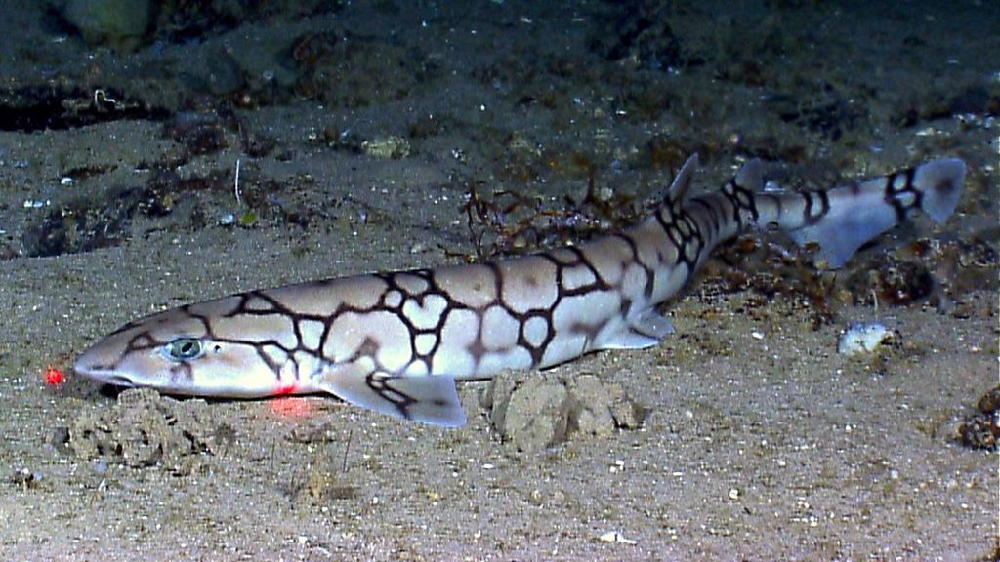

Kistestű cápafajok:

Macskacápa
Macskacápa is a relatively small species of shark, found in tropical and subtropical waters. They are known for their distinct cat-like head and are often found near the ocean floor.

Macskacápa
Macskacápa is a relatively small species of shark, found in tropical and subtropical waters. They are known for their distinct cat-like head and are often found near the ocean floor.